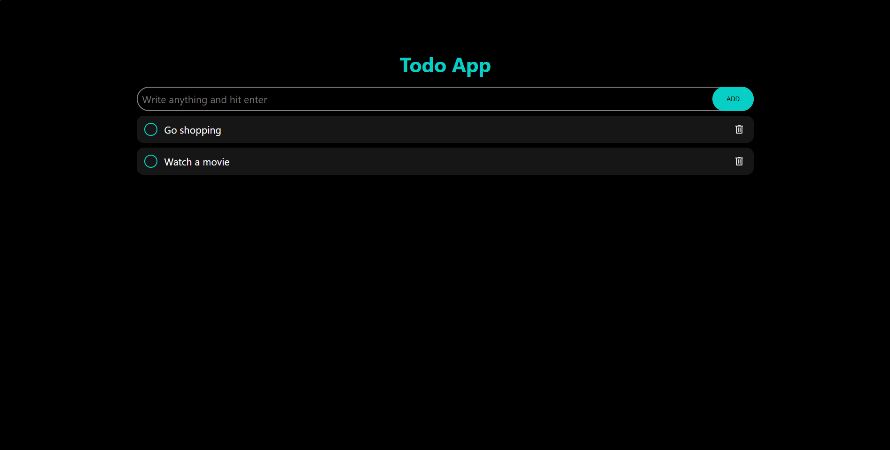

TASK
FLOW
A clean, minimal todo application built for focused productivity. Designed with simplicity and speed as first principles.
Role: Full-Stack Developer
Year: 2026
Type: Web App
01 PROJECT OVERVIEW
BUILT FOR CLARITY
ABOVE ALL ELSE.
This project is a browser-based todo application designed to strip away distraction and bring tasks to the foreground. The interface is intentionally minimal - every interaction is deliberate, every pixel earns its place.
The project explores how thoughtful UX patterns and clean architecture can turn a simple concept into a polished, production-quality product.

Feature 1
Create, edit, delete, and organize tasks